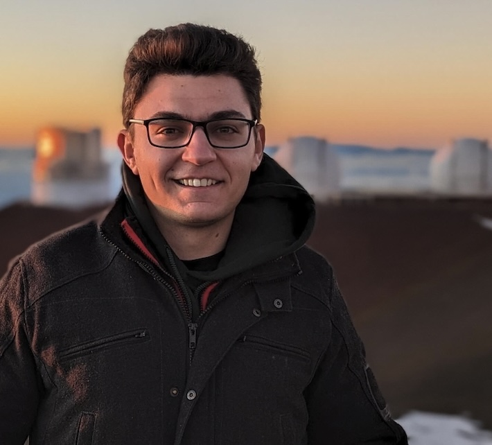
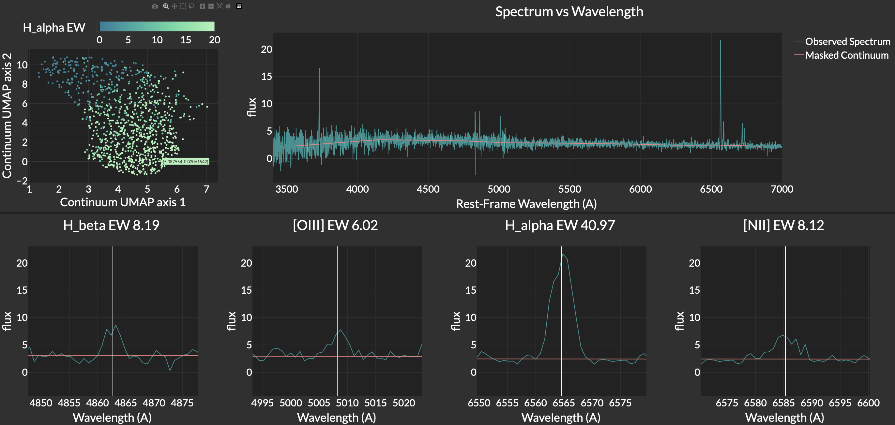
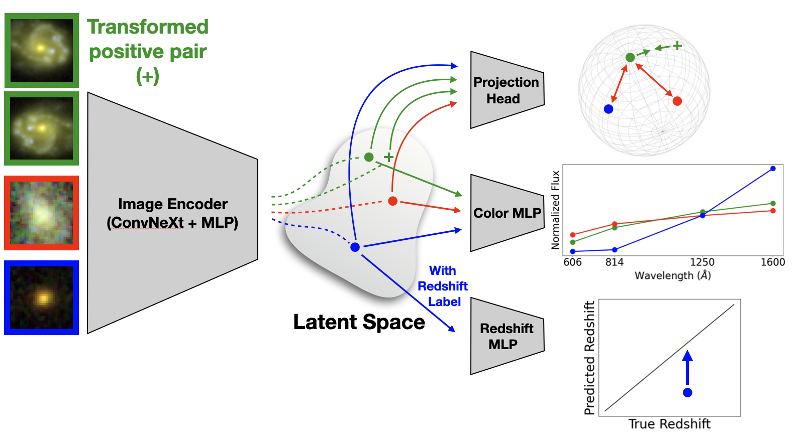
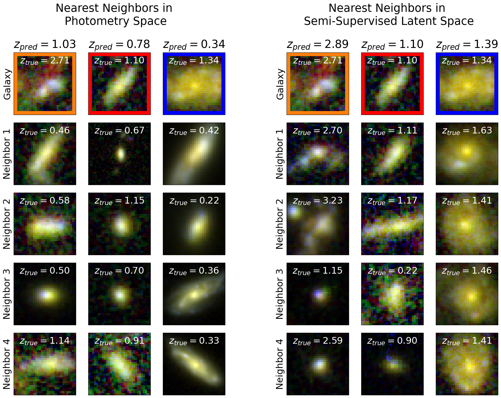
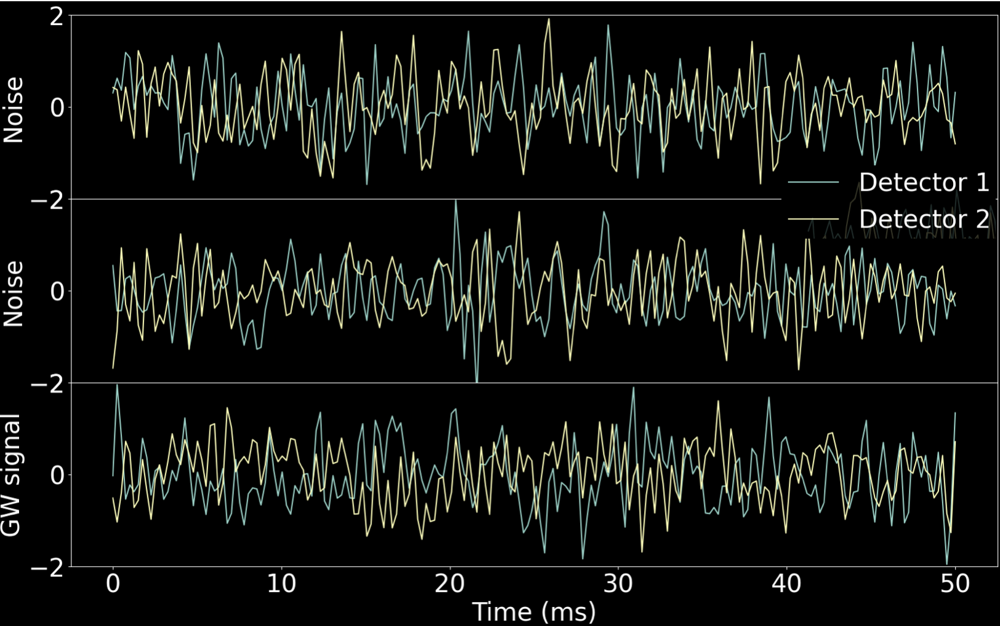
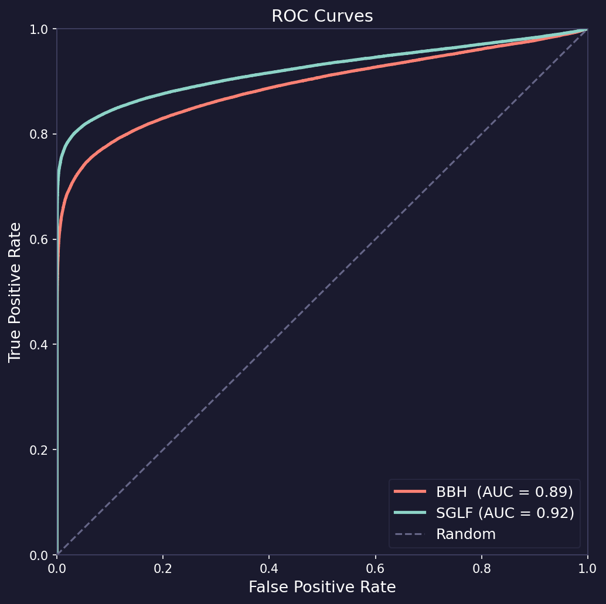

PhD Student
University of Pittsburgh
I use Machine Learning and AI to understand the Universe. My research focuses on applying neural networks, CNNs, contrastive learning, and transformers to large astronomical datasets — with an emphasis on measuring galactic distances.
I am interested in applying machine learning — neural networks, CNNs, contrastive learning, Generative AI, and transformers — to large astronomical datasets. A key ingredient to studying cosmology and galaxy evolution is knowing distances to galaxies, which is the primary focus of my research. I am part of the Dark Energy Spectroscopic Instrument (DESI) Collaboration and the Legacy Survey of Space and Time Dark Energy Science Collaboration (LSST DESC).
If you've ever seen images of spiral galaxies, you might have noticed glowing red or pink spots sprinkled throughout. These galactic neon lights are actually clouds of hydrogen gas, lit up by the intense radiation of young, massive stars — similar to how neon signs work, except starlight drives the process instead of electricity.
We trained a JAX-implemented neural network on the DESI early data release to predict the strengths of emission lines from starlight. When galaxy light is split into its constituent wavelengths, it produces a spectrum — most of the light comes from stars as a smooth continuum, and the emission lines appear as sharp spikes on top. We show these two sources are strongly correlated, since emission lines are produced when gas is ionized by stellar light, and the starlight encodes the galaxy's star formation history.

To visualize this correlation, I built an interactive Dash/Plotly app showing a 2D UMAP projection of starlight for 1,000 galaxies, color-coded by H-alpha emission strength. Galaxies with strong H-alpha emission have the youngest stars (blue continua), while weak emission corresponds to the oldest (red continua).
Galactic distances are a key ingredient to understanding how the universe and galaxies formed and evolved. Measuring distances reliably involves resource-intensive spectroscopy, while estimating them from images is more efficient but less accurate. With reliable spectroscopic measurements for a fraction of imaged galaxies, ML algorithms can estimate the distances of the rest.
Deep CNNs are effective at estimating distances to nearby galaxies from ground-based images, but have not been tested for more distant galaxies due to limited training data. Upcoming observatories like the Nancy Grace Roman Space Telescope will provide high-resolution images of hundreds of millions of distant galaxies, making this a timely challenge to address.
We curated a catalog of ~100,000 Hubble Space Telescope (HST) images, ~20,000 with reliable distance labels. Our semi-supervised approach uses unlabeled images with color prediction and contrastive learning losses, then aligns the latent space via a distance prediction loss on labeled data. For bright galaxies, our method reduces bias by 87%, NMAD by 20%, and fraction of outliers by 47% compared to traditional methods.


Instruments like LIGO are extremely sensitive, making them susceptible to noise from mirror vibrations, earthquakes, and even traffic. This makes it difficult to differentiate between real gravitational wave signals and noise. Statistical methods could detect GWs if the noise were Gaussian — but the noise is non-Gaussian and difficult to model analytically.

I used a normalizing flow — a generative AI model that parameterizes unknown distributions — to learn the noise distribution from both LIGO detectors (Hanford and Livingston). Once the noise distribution is learned, gravitational waves can be detected as statistical outliers. This approach achieved a 92% AUC score, indicating strong ability to distinguish real GW signals from noise.

I am Lebanese-Armenian, born and raised in Lebanon. I am currently a 4th year PhD student at the University of Pittsburgh, where I apply machine learning and AI to problems in observational astronomy and cosmology.
Outside of research, I enjoy rock climbing, playing football (soccer), and photography. I love exploring new places.
Whether you want to collaborate on research, discuss ML for astronomy, or just say hello — feel free to reach out.
ask126@pitt.edu GitHub ↗